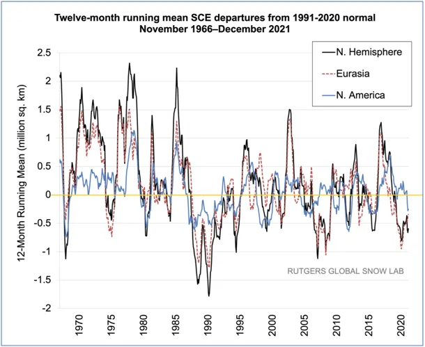
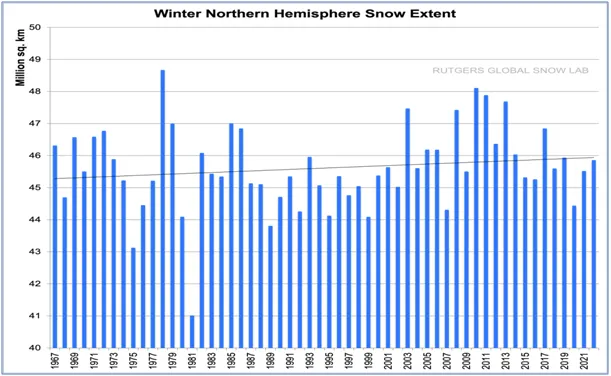
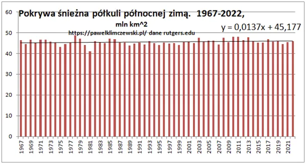

Wielkim, wspólnym wysiłkiem uratowaliśmy Planetę!
Warto trochę poszukać na temat śniegu. Jak poprzednio pisałem lody Arktyki nie są dobrym predyktorem przemian klimatu tak bardzo jak pokrywa śnieżna całej naszej półkuli. Zasięg śniegu mówi nam dokładnie, gdzie jest zimno na kontynentach, lód Arktyki to skutek ruchu prądów oceanicznych, które mogą, ale nie muszą ogrzać całą atmosferę. Gdyby ogrzały zasięg pokrywy śnieżnej na lądach byłby mniejszy a on od 50 lat rośnie. To gdzie to ciepło, które dociera do bieguna aż z Morza Karaibskiego?
To ciepło, proszę Państwa jest w Kosmosie i oddala się od nas bezpowrotnie w postaci promieniowania podczerwonego po linii prostej z prędkością światła.

Pierwszy wykres na jaki trafiłem to anomalie zasięgu pokrywy śnieżnej na naszej półkuli (N. Hemisfere). Anomalie, czyli odchylenia od stanu średniego. Wyraźnie spadają w ostatnich dekadach, czyli sytuacja staje się bardziej przewidywalna. Obecna skala anomalii to ok. 1 mln km^2 (milion kilometrów kwadratowych). Kiedyś pogoda była mniej przewidywalna, ale nie było kamery na każdej latarni, w każdej wiosce.
Spójrzmy na drugi wykres z pokazanym zasięgiem pokrywy śnieżnej (climate.rutgers.edu).

Widzimy od razu, że obszar, który zimą jest pod śniegiem to ok. 46 ml km^3. Polska ma 0,3 mln km^2 a odchylenia roczne mają rząd trzech Polsk. To 2% mierzonej powierzchni, czyli mało. Wykres drugi sugeruje wzrost, ale to wzrost mikroskopijny. Zrobiłem wykres ze skalą od zera, to ten trzeci, jest to najbardziej nudny wykres jaki widziałem. Nuda, nic się nie dzieje, jak w polskim filmie! Jest na nim też równanie regresji dla śniegu y = 0,0137x + 45,177 co znaczy, że rocznie rośnie o 0,0137 mln km^2, czyli trzeba 77 lat, aby wzrósł średnio o 1 mln km^2, czyli o tyle, ile wynoszą roczne anomalie.

Spodziewałem się zmian znacznie większych, ale widać nasza planeta to super termostat, czyli układ ze sprzężeniem zwrotnym ujemnym, parafrazując klasyka "im zimniej, tym cieplej" ;) Cała maszyna jest bardzo skomplikowana, ale w skrócie to jest tak, że gdy Słońce za mocno grzeje woda paruje, pojawiają się duże chmury, spada deszcz i znów jest chłodno. Zobaczymy to na własne oczy już w maju a może nawet w kwietniu, jeśli wegetacja będzie wczesna.
Dane te są zgodne z pomiarami aktywności Słońca, które jest w końcowej, schyłkowej fazie cyklu 107. letniego. Po 2030. powinno przestać rosnąć tylko minimalnie spadać, ale to będzie widać gdzieś w 2050. Zmiany będą malutkie jak obecnie i wtedy się dowiemy, że wielkim wspólnym wysiłkiem uratowaliśmy Planetę.
Paweł Klimczewski